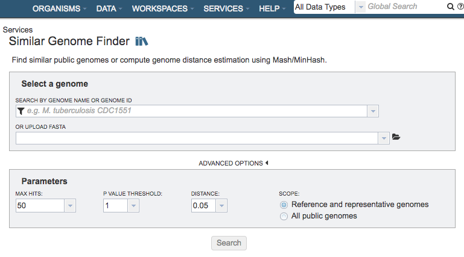
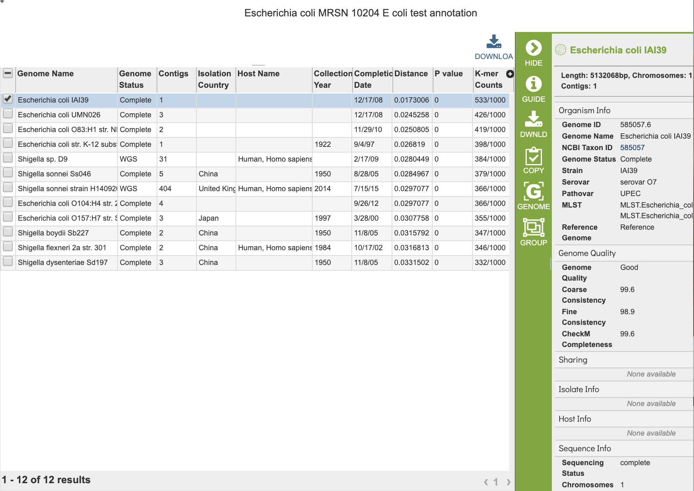

Similar Genome Finder Service¶
Overview¶
The bacterial Similar Genome Finder Service will find similar public genomes in BV-BRC or compute genome distance estimation using Mash/MinHash. It returns a set of genomes matching the specified similarity criteria.
See also¶
Using the Similar Genome Finder Service¶
The Similar Genome Finder submenu option under the Services main menu (Genomics category) opens the Similar Genome Finder input form (shown below).


Select a Genome¶
Specifies the genome to use as the basis for finding other similar genomes
Search by Genome Name or Genome ID¶
Selection box for specifying genome in BV-BRC to use as the basis of comparison
Or Upload FASTA¶
Alternate option for uploading a FASTA file to use as the basis of comparison. Note: You must be logged into BV-BRC to use this option.
Advanced Options¶
Parameters¶
Max Hits: The maximum number of matching genomes to return.
P-Value Threshold: Sets the maximum allowable p-value associated with the Mash Jaccard estimate used in calculating the distance.
Distance: Mash distance, which estimates the rate of sequence mutation under as simple evolutionary model using k-mers. The Distance parameter sets the maximum Mash distance to include in the Similar Genome Finder Service results. Mash distances are probabilistic estimates associated with p-values.
Scope: Option for limiting the search to only Reference and Representative genomes, or all genomes in BV-BRC.
Output Results¶

The Similar Genome Finder Service generates a table of matching genomes based on the options chosen.
References¶
Ondov BD, Treangen TJ, Melsted P et al. Mash: fast genome and metagenome distance estimation using MinHash, Genome biology 2016;17:132.